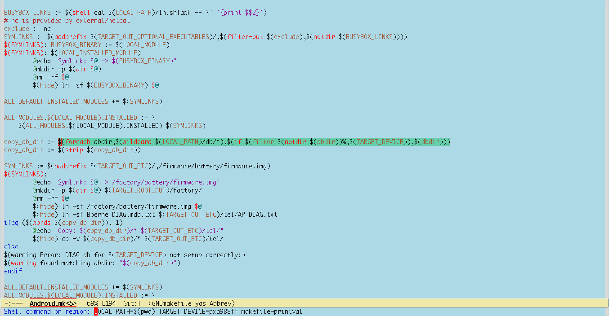

Emacs and interactive makefiles
很多脚本语言都支持one-liner。有的还提供一个shell/ide，你在上面打一个表 达式，可以马上看到它的结果（比如matlab、python、scheme、tcl等，连C都有 一个tcc可以把编译、执行简化为一步）。这样可以方便用户使用的同时，还可以 方便用户的学习。一个interactive的编程环境是非常重要的。就像MS Word 吹嘘 的“所见即所得”的编辑方式对吸引用户很有杀伤力一样，一个交互式的编程环境 对程序员来说也是非常有好处的（记得“Coders At Work”里有一个被采访的大牛 说到过这一点，可能是javascript的作者？）。有一个理念大概是说，从程序员 敲完代码到他/她看到结果（不论好坏），中间需要步骤越多、时间（编译、运行 等）越长，他就越“苦逼”。这大概跟一个很有趣的研究有点共通之处：把一个人 的听觉用仪器分离出去，再让他说话，但他发出的声音要在半分钟后才让他听见。 据说参加实验的人很快就失去语言能力甚至出现精神失常… 又，巴甫洛夫的条 件反射也是同样的道理：每次你养的狗乖乖按你的指示做了，但你都在半个小时 或者一堆莫名其妙的仪式后才奖给它一块肉吃；每次它不乖了，你都在半个小时 之后才把它拎起来揍一顿。这样的狗想必不会觉得自己幸福吧！
makefile就是这样一种让我觉得苦逼头疼没有交互式环境的脚本语言。每次我们 想执行一个小表达式都涉及一堆重复的 boilerplate 步骤。比如下面一段稍微复 杂的片段：
copy_db_dir := $(foreach dbdir,$(wildcard $(LOCAL_PATH)/db/*),$(if $(filter $(notdir $(dbdir))%,$(TARGET_DEVICE)),$(dbdir)))
在对makefile不是很熟的情况下，我们希望看到它的每个子表达式具体会被eval
成什么值。这个可以用 $(warning) 来实现，但如果用一般的方法的话，具体
的步骤大概是这样的：
- 拷下某个感兴趣的子表达式，比如
$(if $(filter $(notdir $(dbdir))%,$(TARGET_DEVICE)),$(dbdir)) - 写一个临时的makefile，
$HOME/makefile.tmp，内容如下：$(warning your expression evals to: $(if $(filter $(notdir $(dbdir))%,$(TARGET_DEVICE)),$(dbdir)))
- 但是上面的makefile还不会工作，因为用到的变量目前全部是空的，所以需要
给它们一个稍微有点意义的赋值，所以文件内容变成这样：
dbdir := db/yellow TARGET_DEVICE := yellow_stone $(warning your expression evals to: $(if $(filter $(notdir $(dbdir))%,$(TARGET_DEVICE)),$(dbdir)))
- 这时候我们跑一下
make -f ~/makefile.tmp输出如下：/tmp/GmucSK3W:3: your expression evals to: db/yellow make: *** No targets. Stop.
- 上面的输出基本上验证了我们的子表达式是OK的，现在可以把临时文件删掉了。
毫无疑问，这么多步骤是比较烦的，不利于我们的quick learn。尤其是考虑到那 么多子表达式需要学习，中间又需要在emacs和shell之间切换来切换去…
好消息是，通过一个脚本 makefile-printval 的帮助，以上步骤我们可以用
Emacs大大简化，从而让它基本达到“交互式”编程的标准：
- mark the sub-expression you want to evaluate
- shell-command-on-region（
M-|） ：dbdir=db/yellow TARGET_DEVICE=yellow_stone makefile-printval
具体可见下图：

这个脚本的内容如下：
#/bin/bash echo "\$(warning value is :$(cat):)"|make -f -